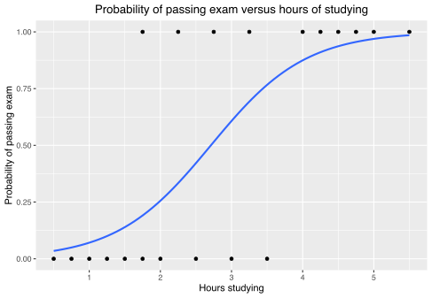

The code for the post is available at moe.ipynb.
Theory
Mixture of Experts is an old technique dating back to 1991, but it has become a vital component of modern deep learning to get around the memory bottleneck. There is not much theory to speak of, because this is honestly a very simple technique. Let’s say you have a few predictive models. Each model is an expert. Now you take all of them and combine their predictions in some way – that’s mixture of experts.
Mixing
Consider a simple example. Suppose we are to classify points on the \(\mathbb{R}^2\) plane into 2 classes. Suppose that we can only use a single linear-logistic function \(f(x) = \frac{1}{1 + e^{w^T x + b}}\), then we can write down this classifier:
\[ \hat y := \begin{cases} 1, \quad & \text{if }f(x) > 0 \\ 0 , & \text{otherwise} \end{cases} \]
In other words, we have a logistic regression model.

{kind=link}
Like perceptrons, logistic regression is simple, fast, and has a very elegant theory – and like perceptrons, logistic regression does not work if the underlying system is not linearly separable.
Now, consider the simplest example that is not linearly separable: a binary classification on the plane. One class falls into the first quadrant, and the other into the other 3 quadrants. There is some noise, so the points near the edges do not always fall into their respective classes. There is no way to perform this task well with just one logistic classifier, but with two, we should be able to perform this task well enough.
Let’s design the 2 experts manually, and somehow combine them. The 2 experts should each handle one of the edges:
\[ f_1(x, y) = \frac{1}{e^{10 x}+1}, \quad f_2(x, y) = \frac{1}{e^{10 y}+1} \]
In words, \(f_1\) is a smooth approximation to the 0-1 function that sends \((x, y)\) to \(1\) iff \(x > 0\), and similarly, \(f_2\) is a smooth approximation to the 0-1 function that sends \((x, y)\) to \(1\) iff \(y > 0\). How do we combine them?
We can add another “manager” which is an expert at picking experts. It would pick \(f_1\) if the point \((x, y)\) falls above the diagonal line \(x=y\), and pick \(f_2\) otherwise. This would then give us
\[ f(x, y) = \begin{cases} f_1(x, y), \quad &\text{if } y-x > 0 \\ f_2(x, y), \quad &\text{if } y-x < 0 \end{cases} \]
This is the simplest example of sparsely-gated MoE. For each point, the manager picks the right expert to call, and call that expert. The other expert does not ever need to be activated, saving half the compute, the manager’s computation is so simple that it does not cost anything compared to the expert’s computation, which contains an exponential.
We can also combine the experts by a linear function, as in
\[ f(x, y) = \sum_{i = 1}^2 p_i(x, y) f_i(x, y) \]
where \((p_1, p_2)\) is a probability distribution over the experts that depends on \((x, y)\), such as \(\mathop{\mathrm{softmax}}(A(x, y))\) where \(A\) is a linear operator, that is, a matrix. For lack of a better word, I call this dense MoE.
Sparsifying
Given a MoE, there are two ways to use it. One can use it as-is, but then every expert must be consulted on every query, defeating the main purpose of MoE in the age of large models: conditional computing. Therefore, the model should be sparsified.
In the first MoE paper (Jacobs et al. 1991), they manually inspected the weights (the matrix \(A\) in our notation), and found that some experts would never be called on any input. Then they just removed those experts. This can be understood as sparsification “at compile time”.
In the toy model, I trained 6 logistic regression experts to classify 2-dimensional points, so the matrix \(A\) has 6 rows and 2 columns. To sparsify the model at compile time to only \(k\) experts, I took the matrix \(A\) and ranked them according to their L2-norm, found the top-\(k\) rows of them, then mask out all the other experts. The resulting heat maps at various levels of \(k \in 1:6\) are as follows.
As expected, when \(k=1\), we have only one expert taking care of everything, and end up with a linear classifier. When \(k=2\), the sparsified MoE looks much closer to the correct classifier. When \(k \geq 3\), it becomes indistinguishable.
Now, for the sparsely-gated MoE, the sparsification is done “at runtime”. That is, for each input \(x\), we find the top-\(k\) experts for this specific \(x\), and use those experts:
\[w(x) = \mathop{\mathrm{softmax}}(\mathrm{top}_k(Ax))\]
where \(\mathrm{top}_k(v)\) preserves the top-k entries of \(v\), but set all other entries to \(-\infty\). This means we have to keep all experts at runtime, since each expert might be needed for some specific input point, but every input point would only activate a few experts. The key is that the activated experts depend on \(x\), unlike the MoE sparsified at compile time, which always activates the same few experts. This means we can achieve a lower sparsity, and less compute. We trade memory for performance and compute.
In the same toy model, the resulting heat maps at various levels of \(k \in 1:6\) are as follows.
Compared with the compile-time sparsified MoE, the sparsely-gated MoE is already usable when \(k=1\), and it looks like a piecewise-linear classifier. When \(k=2\), it already becomes indistinguishable from the correct classifier.
Brief history
In the beginning was the gaussian. The gaussian is a beautiful distribution, with linearity, the central limit theorem, fast inference, least squares regression, and so on. The problem is that it has just one peak.
If one wants to model a complicated distribution with several bumps, one can make one step up the staircase of complexity, and build distributions from a linear sum of several gaussians. This is the mixture of gaussians. More generally, simple statistical models like the Poisson distribution, the Bernoulli distribution, and so on, can be added together to create mixture models.
{kind=link}
A mixture of experts is then a simple generalization, and training a mixture of experts, back in the old days, was mostly thought of as statistical inference. The main problem was simply modelling complex data with a larger family of statistical distribution. Their main worry was that the experts would overfit.
They had little data (enough to fit onto a floppy disk), and each expert was usually just a gaussian distribution or a logistic classifier (any more complex and they wouldn’t know how to calculate the integrals and derivatives). Consequently, what they ended up trying to solve was to fit a few thousand datapoints using tens of very simple experts.
It is a general fact of classical machine learning that they were very worried about overfitting, and it was a reasonable worry back then, since they had such small datasets (MNIST was in 1994). This, combined with their inability to hand-design learning algorithms for complex machine learning architectures and the slowness of pure gradient descent, meant that machine learning algorithms back then were simple ones fitted onto small datasets.
| cost of | 1980s | 2010s | 2020s |
|---|---|---|---|
| data | high | low | low |
| algorithm | high | low | low |
| training | low | medium | high |
| inference | low | medium | high |
The overall effect is:
- getting training data: expensive (you have to do it yourself);
- designing the algorithm: expensive (cheaper if you have graduate students);
- training compute: low (there was little funding for training);
- inference compute: very cheap (since you could not train large models).
This should be compared to the very different situation with deep learning since the 2010s:
- getting training data: cheap (just download it online);
- designing the algorithm: cheap (make a standard network, add a few decorations, then use backprop with Adam optimizer);
- training compute: as expensive as you want;
- inference compute: as expensive as you want.
While classical statistics and machine learning was mainly constrained by how many partial derivatives and integrals the statistician can calculate confidently on paper,1 deep learning is mainly constrained by memory and compute budget.
1 If you want a taste of the old days, look at the formulas inside (Jordan and Jacobs 1994). They explicitly calculated the expectation-maximization algorithms for learning a hierarchy of linear experts.
So when the deep learning era came circa 2012, people immediately started looking into how to perform conditional computing, that is, to save compute by only calling a small portion of the model. The idea is that you would have different portions of the model be specialized for different forms of input, and for each input, the model would first cheaply find out which expert should handle it, then call upon only the few specialized experts to handle this particular input.
The first paper on applying MoE to deep learning was (Eigen, Ranzato, and Sutskever 2013), one year after AlexNet. However, the deep MoE (DMoE) proposed in the paper has no sparsity, and so it has no modern offsprings. For history’s sake, here’s how it worked.
Let \(f_{1, 1}, f_{1, 2}, \dots, f_{1, n}\) be \(n\) feedforward modules with the same number of input and output neurons. Now, each can be treated as an expert, and be mixed by
\[ f_1(x) = \sum_i g_{1, i}(x) f_{1, i}(x) \]
where \(g_{1, i}\) is a tiny neural network, the gating network for this MoE layer. Now, stack multiple such layers, and we would obtain a DMoE. As one can see, such a network still has to use all the parameters in each forward pass, and therefore saves no compute. It is simply a case of the dense MoE.
Modern2020s deep learning really arrived with the sparsely-gated MoE (Shazeer et al. 2017), which saves compute. Specifically, if each layer contains \(8\) experts, but only \(2\) are consulted, then the cost of compute is only about \(1/4\) for the full model.
Why MoE for deep learning?
Generally, one uses a MoE on the frontier, because:
- You really need to push the metric up by a few points.
- You can’t train a dense model larger than the frontier model, because it simply fails to converge, or the hyperparameter settings for the small models don’t work for the larger one (and you can’t just run a grid search to find it because it costs a million dollars to do a single run).
- You can train around 10 copies of the frontier model, because while you don’t have the money to do grid search beyond the current frontier, you have the money to train 10 at the frontier.
- You can’t infer a dense model larger than the frontier one, because one dense model \(N\) times as wide would cost you \(N^2\) amount of storage and compute, while if you just train \(N\) experts, each with roughly the same architecture as the dense model, it would cost you about \(N\) amount of storage and about \(2\) amount of compute (if only 2 experts are called per question).
- Indeed, if there are too many parameters, then it can’t even be fit onto a good GPU and must be split across GPUs, and then the GPU–GPU communication becomes a serious problem (the “von Neumann bottleneck”).

All of which are satisfied by Microsoft, Google, etc. This explains why GPT-4 is a MoE made by multiple GPT-3–like models.
A quick scan of the recent literature shows this, all from Google.
We present model architectures in which a MoE with up to 137 billion parameters is applied convolutionally between stacked LSTM layers. (Shazeer et al. 2017)
Combining expert, model and data parallelism, we design two large Switch Transformer models, one with 395 billion and 1.6 trillion parameters, respectively. (Fedus, Zoph, and Shazeer 2022)
we demonstrate the potential of V-MoE to scale vision models, and train a 15B parameter model that attains 90.35% on ImageNet. (Riquelme et al. 2021)
(Shazeer et al. 2017) is not the first paper on MoE in the deep learning era, but it is the most important one. It was applied to between “stacked LSTM layers”, because it was published back when neural language models were stacks of LSTM. Nowadays, of course, MoE usually means MoE layers within Transformers, because only with Transformers do people regularly train models with more than 10 billion parameters.
Load balancing
The main problem with MoE is a kind of rich-get-richer effect. If at the start of training, some experts are consulted often by random fluctuation, they would be heavily trained by backpropagation, and become even better experts, a upward spiral resulting in a few good experts and many useless experts.
For example, in the very first paper on MoE, they trained up to 8 experts to recognize phonemes from 6 Japanese speakers. They found that:
Only experts 4, 5, and 6 are active in the final mixture. This solution is typical – in all simulations with mixtures of 4 or 8 experts all but 2 or 3 experts had mixing proportions that were effectively 0 for all cases. (Jacobs et al. 1991)
This might not have been a serious problem in the past, when neural networks were seen as merely a form of high-dimensional statistical model learnable by any one of the typical statistical algorithms (maximal likelihood, Bayesian inference, expectation maximization…), but nowadays, MoE are used because you need to throw more compute at the problem, but cannot afford a larger dense model. In this case, it would defeat the purpose of MoE if some experts end up neglected.
It is no coincidence, then, that the sparsely-gated MoE paper (Shazeer et al. 2017) specifically used two auxiliary loss functions to encourage the experts to have equal “weight” over time. It was simplified to just one in the Switch Transformers paper (Fedus, Zoph, and Shazeer 2022).
Specifically, consider the sparsely-gated MoE with \(k=1\) – where just the top-ranked expert is consulted every time. Let \(n\) be the number of experts, and consider a batch of queries \(\{x_1, x_2, ..., x_T\}\), then the auxiliary loss of the batch is
\[ L := n \sum_{i=1}^n f_i P_i \]
where \(f_i=\frac{1}{T} \#(\text{queries sent to expert $i$})\) is the fraction of time where expert \(i\) is ranked highest, and \(P_i=\frac{1}{T} \sum_{j=1}^T w_i\left(x_j\right)\) is the fraction of weight on expert \(i\).
In the original paper, they claimed that we can obtain the minimal auxiliary loss \(L\) at the limit where every expert has equal weight \(1 / n\) on all samples, and every expert is ranked the highest equally often.
Plugging in the equations, we find it is \(1\). Unfortunately, this is technically wrong. When there are many experts and large batch, a way to let \(L\) approach \(1/2\). It is not difficult to show that \(1/2\) is the true lower bound. Seeing that Google has been training those huge models since 2017, this definitely works in practice, despite being slightly incorrect.
There are plenty of other choices for load balancing, which are rather technical details. For example, the z-loss stabilizes mixed-precision training by discouraging logits that are too far from zero, avoiding large round-off errors (Zoph et al. 2022, secs. 3.3–3.4).
Appendix: Error in load balancing
Let one expert get \(1/2 - \epsilon\) on every question, but is never consulted on anything, and let every other \(n-1\) expert evenly divide the rest of the questions. For example, this is how the weights should be distributed when there are 3 experts on 4 questions:
\[ \begin{bmatrix} \frac 12 - \epsilon & \frac 12 + \epsilon & 0 \\ \frac 12 - \epsilon & \frac 12 + \epsilon & 0 \\ \frac 12 - \epsilon & 0 & \frac 12 + \epsilon \\ \frac 12 - \epsilon & 0 & \frac 12 + \epsilon \\ \end{bmatrix} \]
giving \(L = \frac 34 (1+2\epsilon)\). By generalizing this construction, when there are many experts and large batch, we have \(L \to 1/2\). It is not difficult to show that \(1/2\) is the true lower bound.
With the global optimization method of dual annealing2, Python found something close to the true lower bound, as shown in the figure. The load balancing matrix has a bright strip of \(1/2 - \epsilon\), and slightly brighter dots of \(1/2+\epsilon\) jumping around the matrix, as expected.
2 I tried using local optimization with SciPy’s minimize, but it always fails to converge to \(\sim 1/2\). It even fails to converge to \(\sim 1\). Indeed, often it just moves around the initial point a bit then immediately gives up and stops. My suspicion is that the loss landscape is too jagged.